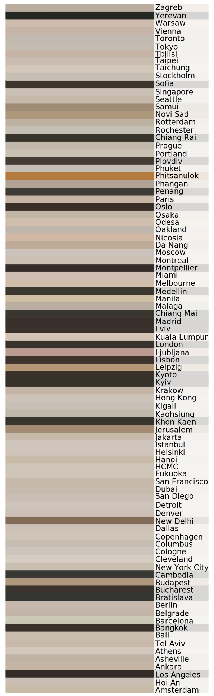

The Geography of Third-Wave Coffee
These maps show cities with the highest concentration of third-wave cafés — all with over 40 documented shops. By placing each coffee dot against local landmarks and street layouts, we can see how coffee culture clusters: often in creative districts, gentrifying zones, or transit corridors.


The geography of third-wave cafés tells us as much about a city's social fabric as it does about coffee itself. In European cities like Berlin, Warsaw, and Amsterdam, coffee shops tend to be more evenly spread — mirroring the density and walkability of older urban cores. In contrast, cities like Bangkok, Phuket, and Bali show cafés clustered tightly around tourist zones, creative enclaves, or beach-adjacent nomad hubs. In North America, patterns skew toward affluence: in Dallas, Denver, and San Diego, third-wave cafés often align with gentrified neighborhoods or near tech and creative industry zones. What emerges is a global map of taste — not just for coffee, but for lifestyle.
Instagram's Palette vs. the Website's
While Instagram captures the lived, lit, and latte-topped moments inside cafés, coffee shop websites tell a slightly different story. We compared each city's most common Instagram tones with their website palettes — and noticed something striking.
Average Instagram
Color Profile per City

Average Wesbite
Color Profile per City

On Instagram, the world's cafés favor warm beiges, desaturated greens, and subtle grays. These are real-life spaces, styled for comfort and captured through phone cameras and natural light.
Compared to this, the **official café websites** (see Section 3) lean even more neutral — dominated by gray tones, dark charcoals, and minimalist white space. While Instagram celebrates warmth and tactility, websites speak in the language of **brand minimalism**.
This contrast tells us something important: Instagram shows how cafés are experienced. Websites show how cafés want to be perceived.